Abdul Haleem Khan
I turn satellite imagery and spatial data into maps and analysis people can act on, from municipal GIS in Saudi Arabia and city master plans in Pakistan to freelance projects for clients in the USA, Europe and the Gulf.
Master plans & municipal GIS
City comprehensive plans for the Government of Punjab (PICIIP) and the Aga Khan Agency for Habitat at Shehersaaz, master-plan and cadastral work across Punjab and KP, and two years running municipal GIS in Saudi Arabia.
Municipal GIS: Uyun Al Jawa, Saudi Arabia
Municipality of Uyun Al Jawa, Al-Qassim (GIS Engineer)
Two years as the municipality's GIS Engineer, running its spatial databases for urban planning and infrastructure and producing the maps behind municipal decisions.
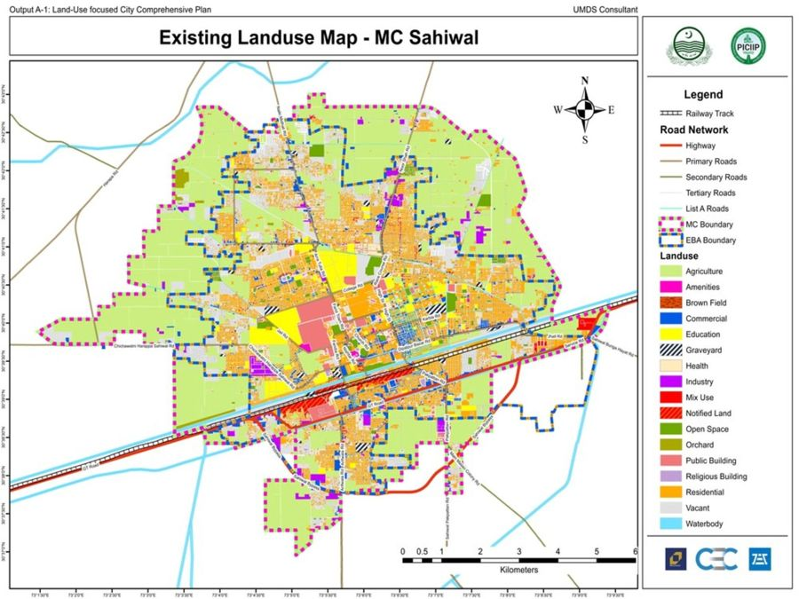
Sahiwal Land-Use City Comprehensive Plan (2022–2042)
Municipal Committee Sahiwal, Punjab, Pakistan
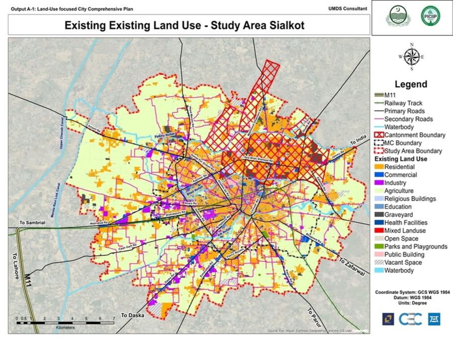
Sialkot Land-Use City Comprehensive Plan
Sialkot, Punjab, Pakistan
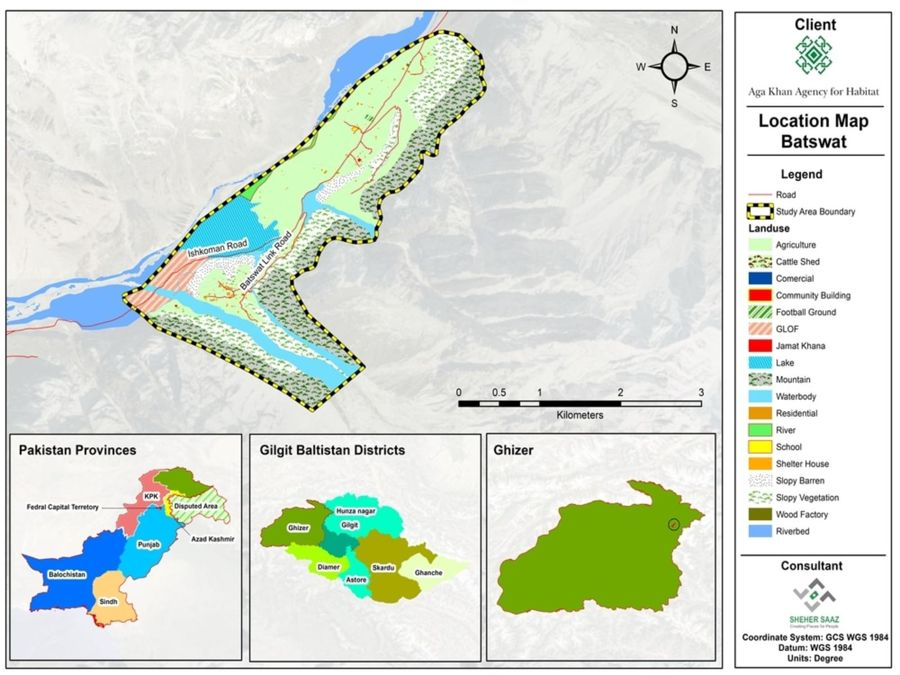
Batswat Habitat Planning: Terrain Assessment
Batswat, Pakistan
City Master Plans & Cadastral Mapping: Punjab and KP
Shehersaaz · supervised by PICIIP, UPU and PULSE
Spatial analysis, mapping and geodatabase management for city master-plan programmes in Punjab (PICIIP) and Khyber Pakhtunkhwa (Urban Policy Unit), and cadastral mapping across several Punjab cities for PULSE (May 2023 – Apr 2024).
Real maps from real projects
These are maps I delivered to clients or produced in my professional work, plus a few practice studies (marked as such). Each case study links to its folder on GitHub with the maps, write-up and data.
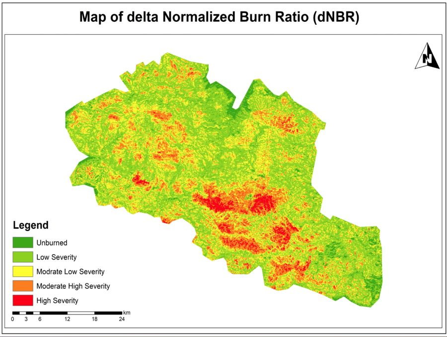
Burn Severity Analysis (NBR / dNBR)
Wildfire-affected landscape
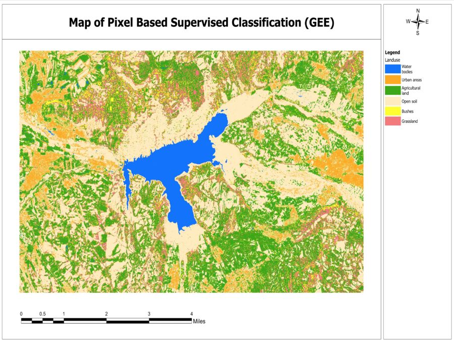
Land-Cover Classification: Supervised vs Unsupervised
Andijan Reservoir, Uzbekistan / Kyrgyzstan
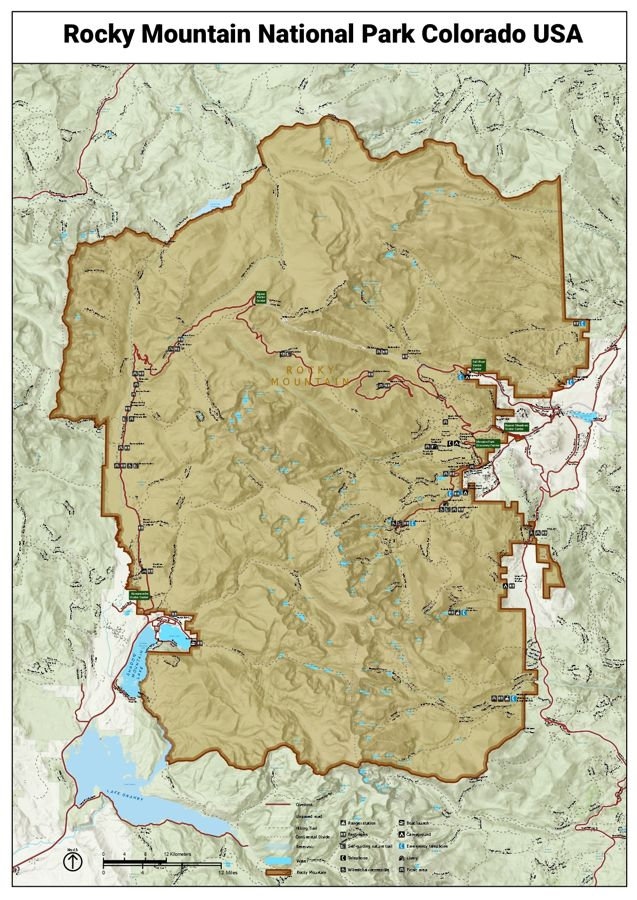
U.S. National Park Service Map Redesign
Rocky Mountain National Park, USA
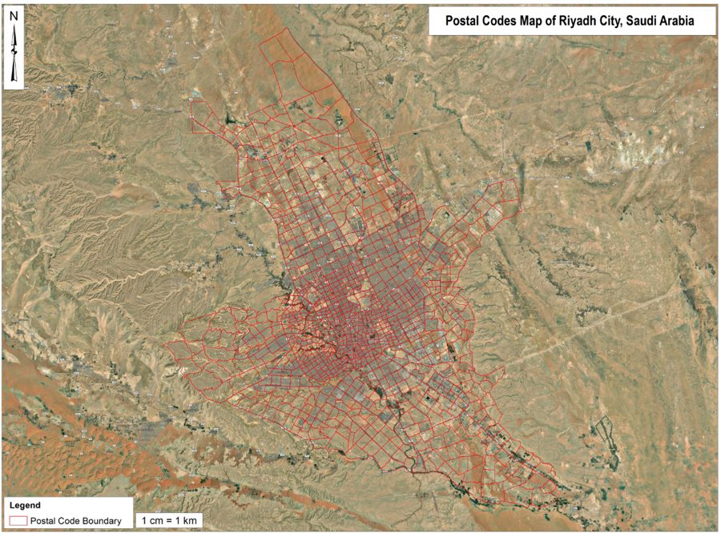
Riyadh Postal Code Boundaries (GeoJSON)
Riyadh, Saudi Arabia
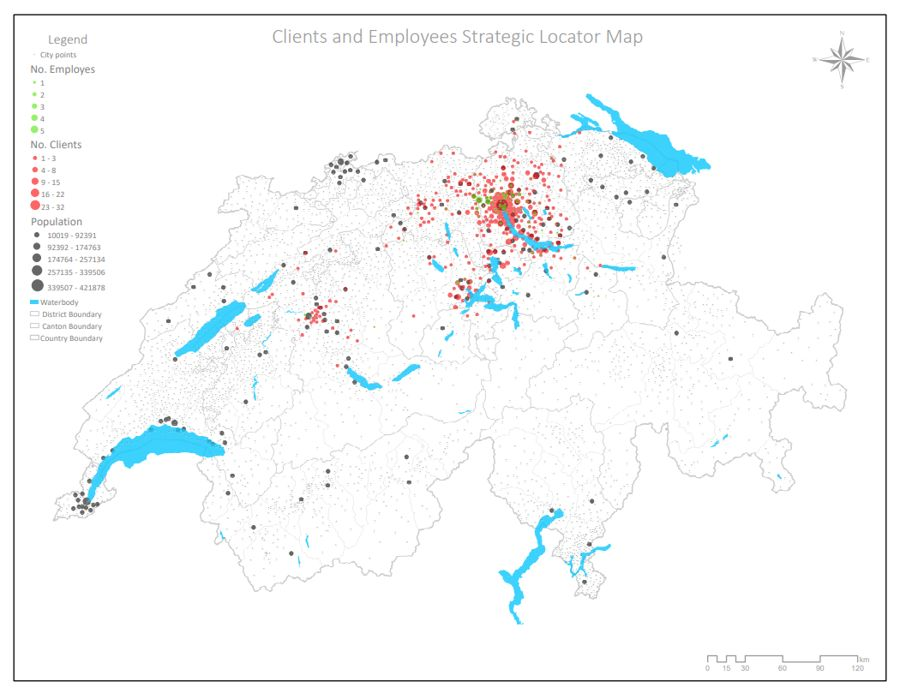
Client & Employee Strategy Maps: Switzerland
Switzerland
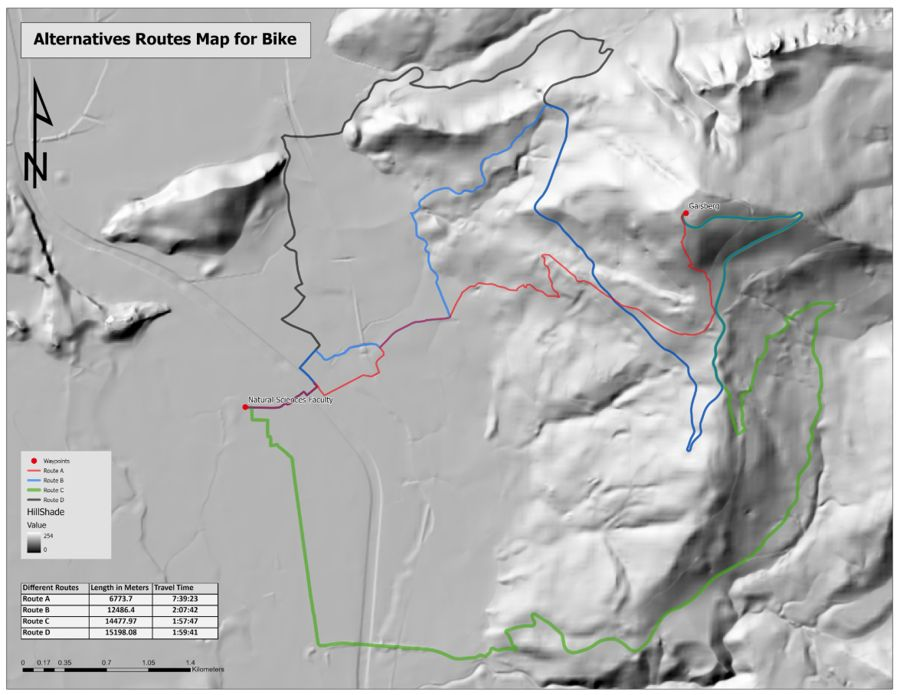
Bike Route Network Analysis
Mountainous region
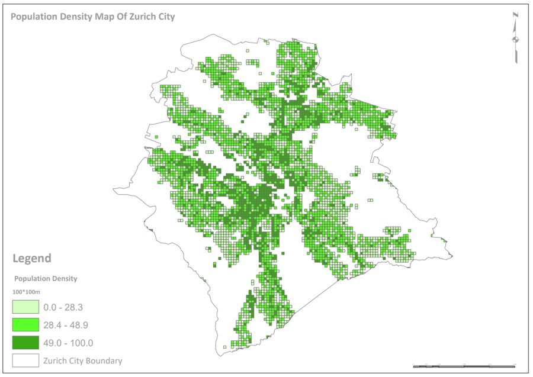
Zurich Population Density, Ages 25–45
Zurich, Switzerland
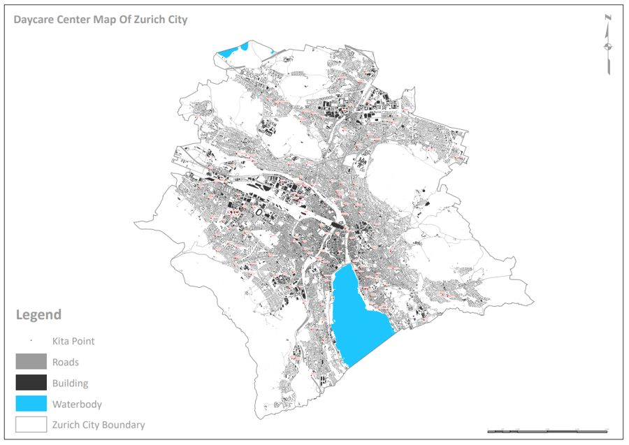
Daycare Centres of Zurich
Zurich, Switzerland
Other delivered work
| Project | Category | Where | Year |
|---|---|---|---|
| Landsat Band 4 & Band 10 Surface Analysis | Remote Sensing & Earth Observation | Study area | 2024 |
| Manual Land-Cover Classification of Aerial Imagery | Remote Sensing & Earth Observation | Aerial image tile | 2024 |
| Urban Land-Cover Classification of Los Angeles | Remote Sensing & Earth Observation | Los Angeles, USA | 2024 |
| NDVI, Supervised & Unsupervised Classification Studies | Remote Sensing & Earth Observation | Various study areas | 2024 |
| Landsat 9 Thermal & Image Analysis | Remote Sensing & Earth Observation | USA (Landsat 9 scene, June 2022) | 2024 |
| NDVI Summary Map (ArcGIS Pro) | Remote Sensing & Earth Observation | Study area | 2025 |
| Choropleth Classification Comparison: Georgia | Cartography & Thematic Mapping | Georgia, USA (159 counties) | 2025 |
| Reference Mapping with Text, Icons & Labels | Cartography & Thematic Mapping | Reference map series | 2025 |
| Racehorse Training Facility Location Map | Cartography & Thematic Mapping | USA | 2024 |
| Land Use & School Locator Map: Wonosobo, Indonesia | Cartography & Thematic Mapping | Wonosobo, Indonesia | 2025 |
| New Mexico Cities Snow-Load & Elevation KMZ | Cartography & Thematic Mapping | New Mexico, USA | 2026 |
| Sales Territory Map from ZIP Codes | Cartography & Thematic Mapping | USA | 2024 |
| Site Suitability for Urban Green Space: Atlanta | Urban GIS & Site Suitability | Atlanta, Georgia, USA | 2025 |
| Multi-Criteria Flood Risk Map: Umluj | Urban GIS & Site Suitability | Umluj, Saudi Arabia | 2025 |
| Employment Density (KDE): Dübendorf | Urban GIS & Site Suitability | Dübendorf, Switzerland | 2024 |
| Residential Parcels by Fire Hazard Zone: Riverside | Urban GIS & Site Suitability | Riverside, California, USA | 2024 |
| Suitable Locations for a Summer Campground | Urban GIS & Site Suitability | Study area, USA | 2024 |
| Real-Estate Parcel Screening: St. Louis | Urban GIS & Site Suitability | St. Louis, Missouri, USA | 2025 |
| Solar Power Plant GIS Dataset | GIS Data Engineering & CAD | Solar power plant site | 2026 |
| 1-ft Contours to CAD (DWG + SHP) | GIS Data Engineering & CAD | Cherokee County, North Carolina, USA | 2026 |
| Vectorised Contours from Scanned Maps (KMZ) | GIS Data Engineering & CAD | USA | 2026 |
| County Dataset Integration: Scott & Dakota, MN | GIS Data Engineering & CAD | Scott and Dakota Counties, Minnesota, USA | 2024 |
| Address Geocoding: New York & Long Island | GIS Data Engineering & CAD | New York, USA | 2025 |
| Polygon & Point Digitisation (QGIS) | GIS Data Engineering & CAD | Imagery tile | 2025 |
| Global Mapper Script: Export Layers to CSV | GIS Data Engineering & CAD | — | 2024 |
Where I've worked
- Jun 2024 – Jun 2026 · Saudi Arabia
GIS Engineer
Municipality of Uyun Al Jawa, Al-QassimManaged municipal spatial databases and urban-planning and infrastructure datasets, produced planning maps, coordinated GPS field data collection, and delivered GIS training to World Bank officials.
- Apr – May 2024 · Lahore
Junior GIS Expert
NESPAKCollected, managed and processed imagery, survey and vector data for engineering and infrastructure projects.
- May 2022 – Mar 2024 · Lahore
GIS Analyst
Shehersaaz Urban Planning ConsultancySpatial analysis and mapping for Land Use Focused City Comprehensive Plans (Sahiwal, Sialkot) and terrain studies for the Aga Khan Agency for Habitat.
- 2023 – present · Remote
Freelance GIS & Remote Sensing
Upwork · Spatial Nexus33 jobs for clients in the USA, Saudi Arabia, Switzerland and elsewhere: remote sensing, cartography, suitability analysis and GIS-to-CAD data work.
Education
- In progress
MSc Geography and Territorial Sciences
University of Turin, Italy - Master's
GIS and Remote Sensing
University of the PunjabThesis: urban sprawl trend in Mardan City, Pakistan (image classification in ERDAS Imagine and ArcMap).
- 2020 – 2022
BEng Geographical Information Systems
University of the Punjab
Advanced Diploma in Geographic Information Systems
Alison · Feb 2025
Remote Sensing Technology and Data Processing Applications
DQGAST & PIESAT · Feb 2022
Tools and methods
GIS software
ArcGIS Pro, ArcMap, ArcGIS Online, QGIS, Global Mapper, AutoCAD (GIS–CAD exchange), Google Earth / KMZ
Remote sensing
Google Earth Engine, ENVI, ERDAS Imagine, SNAP; Sentinel-2, Landsat 8/9; NDVI, NBR/dNBR, supervised and unsupervised classification, change detection
Analysis
Multi-criteria suitability (MCDA), flood risk, kernel density, buffers and service areas, network routing, choropleth classification
Data engineering
Geodatabases, digitising, georeferencing, topology QA, geocoding, GeoJSON / SHP / DWG / KMZ conversion, PostGIS
Programming
Python (ArcPy, GeoPandas, Rasterio, GDAL), GEE JavaScript, Global Mapper scripting
Cartography
Print and web map layout, symbology and labelling, terrain and hillshade, thematic and reference maps
“Abdul delivered exactly what we needed with a complex GIS to CAD conversion.”MBH Inc., USA · Contours to CAD
“He did very well Job delivered his project on time.”Engineering client · Solar plant GIS dataset ($1,000)
“Thanks for fast assistance on an urgent task related to Polygon and Point Digitization!”Valorian · QGIS digitisation
Let's work on your map
Tell me about the area, the data you have and what decision the map should support. I usually reply within a few hours.
- abdulhaleemk03@gmail.com
- Upwork
- abdulhaleemrsgis
- abdul-haleem-khan-rs-gis-specialist
- Based in
- Lahore, Pakistan (GMT+5) · working remotely